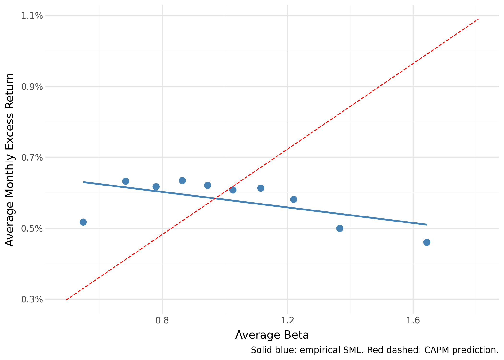
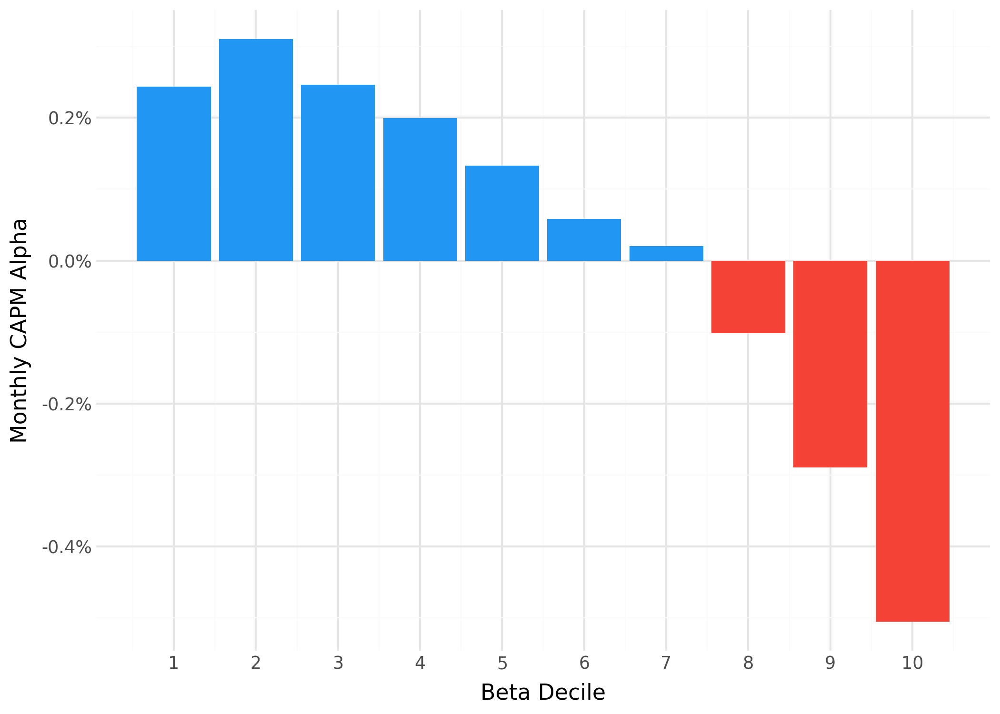
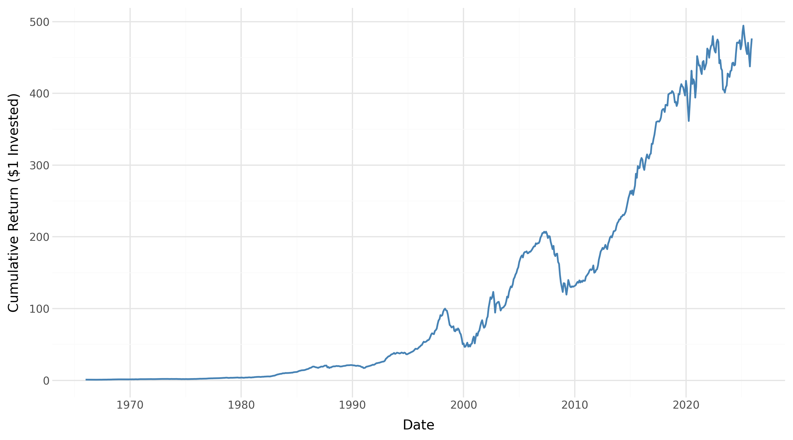

Testing Proposition 1 & 2 in American Equity Markets
Department of Economics · University of Copenhagen
2026-06-02
CAPM Prediction
The Capital Asset Pricing Model predicts a positive, linear relationship between beta and expected return:
\[R_i - r_f = \alpha + \beta(R_m - r_f) + \varepsilon\]
We test two propositions from Frazzini and Pedersen (2014):
Sample: US equities, January 1963 – December 2025
Extension: We introduce transaction costs to assess whether the strategy survives real-world trading frictions.
Leverage Constraints
When investors cannot borrow freely, they compensate by over-buying high-beta risky assets.
Equilibrium Expected Return
Frazzini and Pedersen (2014) show:
\[E_t(r^s_{t+1}) = r^f + \psi_t + \beta^s_t \lambda_t\]
where \(\psi_t\) measures the tightness of funding constraints and \(\lambda_t\) is the risk premium adjusted for these constraints.
A security’s CAPM alpha then equals:
\[\alpha^s_t = \psi_t(1 - \beta^s_t)\]
\[\alpha^s_t = \psi_t\,(1 - \beta^s_t)\]
Implications:
Testable prediction: Running Fama–MacBeth cross-sectional regressions of excess returns on beta should yield a slope that is significantly below the average market excess return, ideally indistinguishable from zero.
Let \(w^L_t\) be weights on low-beta stocks (return \(r^L\)) and \(w^H_t\) on high-beta stocks (return \(r^H\)):
\[r^{BAB}_{t+1} = \frac{1}{\beta^L_t}(r^L_{t+1} - r^f) - \frac{1}{\beta^H_t}(r^H_{t+1} - r^f)\]
Strategy mechanics:
Expected return: \[E_t(r^{BAB}) = \frac{\beta^H_t - \beta^L_t}{\beta^L_t \beta^H_t}\,\psi_t \geq 0\]
Increasing in the beta spread and funding constraint tightness \(\psi_t\).
| Dataset | Frequency | Content | Purpose |
|---|---|---|---|
| CRSP stock data | Monthly | Excess returns, market cap | BAB portfolio & factor returns |
| CRSP stock data | Daily | Excess returns, bid-ask | Volatility (β); transaction costs |
| Fama-French factors | Monthly & Daily | Risk-free rate, market excess return | Excess returns; correlation (β) |
Sample: January 1963 – December 2025 · NYSE, AMEX, NASDAQ
Data accessed via the tidyfinance Python package through WRDS; Fama-French data from Kenneth French Data Library.
Following Frazzini and Pedersen (2014), beta is estimated in two components:
Volatility (daily returns, 1-year rolling): \[\hat{\sigma}_i = \text{std}(\text{daily } r_i), \quad \hat{\sigma}_m = \text{std}(\text{daily } r_m)\]
Correlation (monthly returns, 5-year rolling): \[\hat{\rho}_{im} = \text{corr}(\text{monthly } r_i,\; r_m)\]
Combined estimate: \[\hat{\beta}_i = \hat{\rho}_{im} \cdot \frac{\hat{\sigma}_i}{\hat{\sigma}_m}\]
Vasicek shrinkage — shrink each time-series beta toward the cross-sectional mean:
\[\hat{\beta}^{shrunk}_i = 0.6\;\hat{\beta}_i + 0.4 \times 1\]
This reduces estimation error for stocks with short histories.
Each month:
Testing Proposition 1 — Fama-MacBeth:
Each month estimate: \[r^{excess}_{i,t} = \gamma_0 + \gamma_1 \hat{\beta}_{i,t-1} + \varepsilon_{i,t}\]
Time-series average \(\bar{\gamma}_1\) should be near zero (anomaly present) vs. CAPM prediction of \(\bar{\gamma}_1 \approx \bar{r}^{excess}_m\).
Also compute CAPM \(\alpha\) for each beta-sorted decile portfolio.
| Mean (%/month) | t-statistic | |
|---|---|---|
| Intercept | 0.79 | 5.89 |
| Beta | 0.14 | 0.75 |
Time-series averages of monthly cross-sectional Fama-MacBeth coefficients. t-stats from time-series standard error.
Interpretation:
→ Supports Proposition 1: The empirical compensation for bearing systematic risk is far below what CAPM predicts.
Beta-decile SML vs. CAPM prediction
Apparent tension: The FMB slope (0.14%) is slightly positive, yet the decile SML appears to slope downward. Both are consistent with the anomaly — Fama-MacBeth weights all stocks equally so moderate-beta stocks dominate the slope, while the decile plot gives the extreme high-beta group disproportionate leverage on the fitted line.

Broadly declining alpha across deciles:
Alpha spread (decile 1 → 10): approximately −1.1 pp/month — the pattern is monotone and statistically significant across multiple deciles, not just at the extremes.

| Metric | BAB Factor |
|---|---|
| Ann. Mean Return | 8.85% |
| Ann. Std. Deviation | 11.26% |
| Sharpe Ratio | 0.79 |
| t-statistic | 6.08 |
Performance statistics for the BAB factor following Frazzini and Pedersen (2014). Mean and SD annualised (×12, ×√12). Sample: US equities, January 1963 – December 2025.
Sharpe ratio of 0.79 with t-stat of 6.08 — strongly statistically significant positive returns. → Supports Proposition 2.

Key observations:
The strategy generates meaningful returns over the full sample, with considerable sub-period variation.
| Gross BAB | Net BAB | |
|---|---|---|
| Ann. Mean Return | 9.18% | −51.12% |
| t-statistic | 3.94 | −13.98 |
| Avg. Annual TC Drag | 60.30 pp |
TC subsample: January 1993 – December 2025 (start date driven by CRSP bid-ask spread data availability). Round-trip costs from CRSP daily bid-ask half-spreads, assuming full monthly rebalancing.
The TC drag of 60.30 pp/year far exceeds the gross return of 8.85%. Under full monthly rebalancing the strategy is entirely non-viable after realistic trading frictions.
Consistent with prior literature:
Our results replicate the core finding of Frazzini and Pedersen (2014) on an extended US sample (1963–2025).
Our estimates:
Extends Frazzini and Pedersen (2014)’s sample period by ~13 years with consistent conclusions.
No post-publication decay:
Baker et al. (2011) predict decay as capital flows to exploit the anomaly — our data do not strongly support this narrative.
Transaction costs are overstated:
Our TC estimate is an extreme upper bound. Frazzini et al. (2015) use proprietary execution data and find effective implementation costs of tens of basis points per year — the strategy remains profitable after realistic costs.
Our TC result is best read as a sensitivity analysis, not a verdict on strategy viability.
Sample scope:
TC methodology:
Construction & bias:
Sub-period analysis:
Proposition 1 ✓
Strong evidence of a negative beta–alpha relationship in US equities (1963–2025).
FMB beta slope: 0.14%/month (t = 0.75) — far below the CAPM prediction.
Alpha spread across deciles: ≈ −1.1 pp/month.
Proposition 2 ✓
BAB factor earns 8.85% annualised (SR = 0.79, t = 6.08) — strongly supporting positive expected returns from the strategy.
Transaction Costs ⚠
Under full monthly rebalancing with CRSP quoted spreads, TC drag of 60.30 pp/year renders the net BAB return −51.12%.
This is an upper bound — realistic implementation costs would be substantially lower (Frazzini et al. 2015).
Future Research
We welcome comments and discussion
Tobias Dines Schlünssen · GFS189
Conrad Frederik Kromann · RTL959
Department of Economics · University of Copenhagen
Seminar: Asset Prices and Financial Markets · June 2026
:::